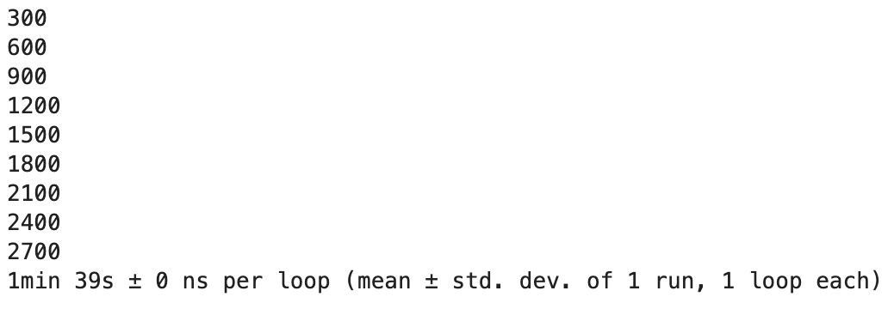
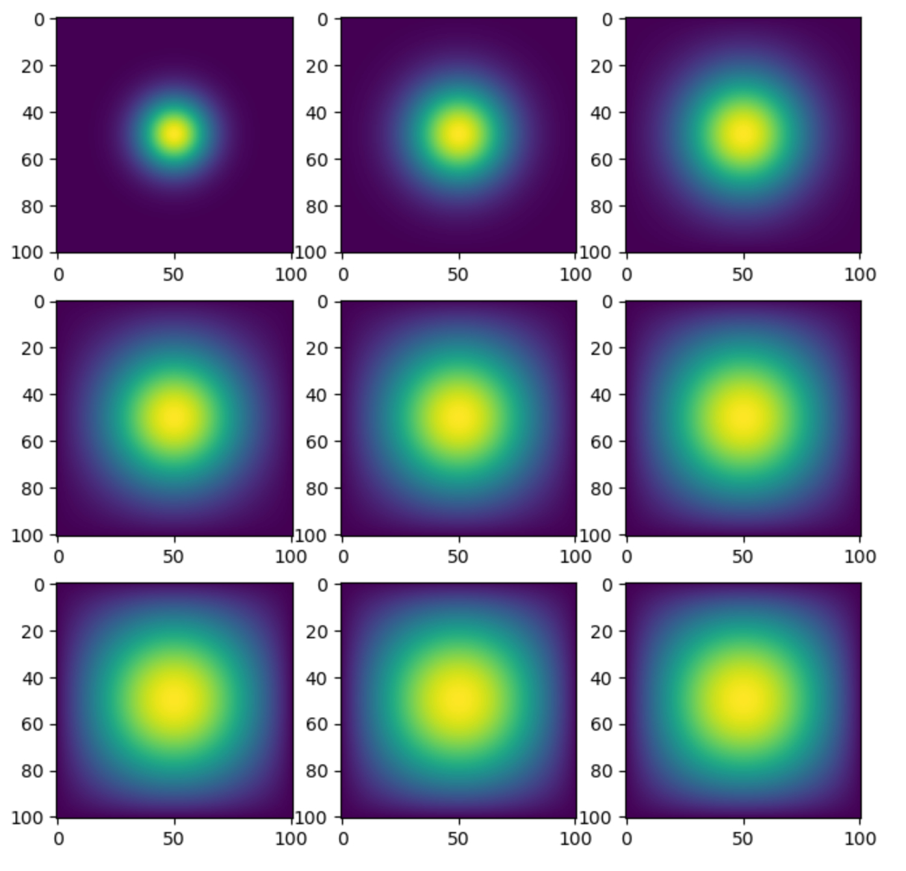
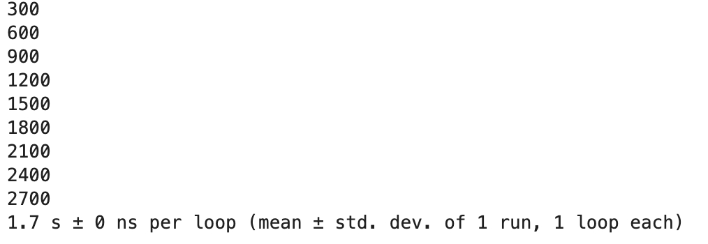
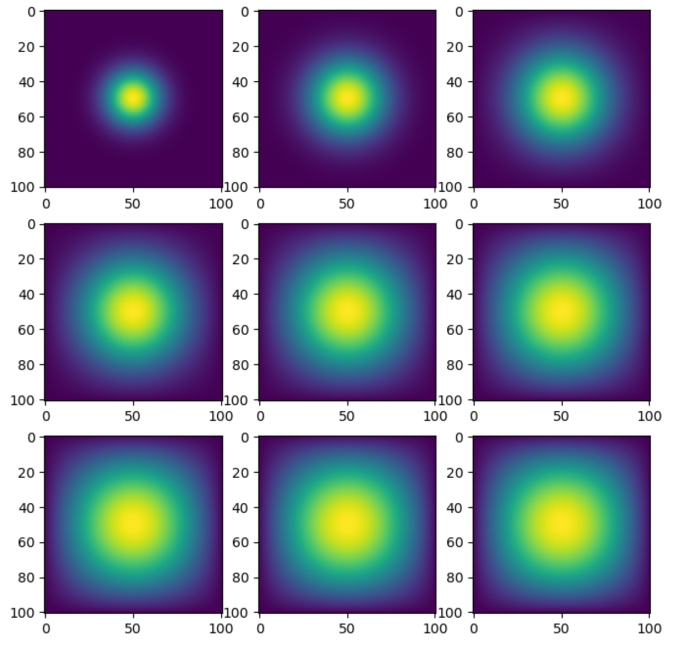
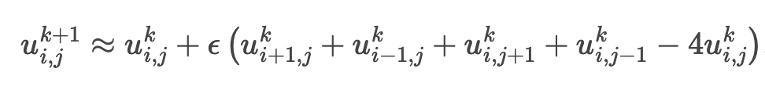
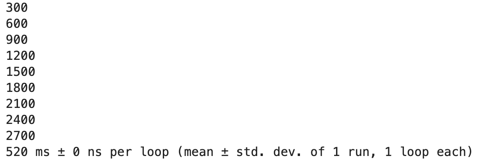
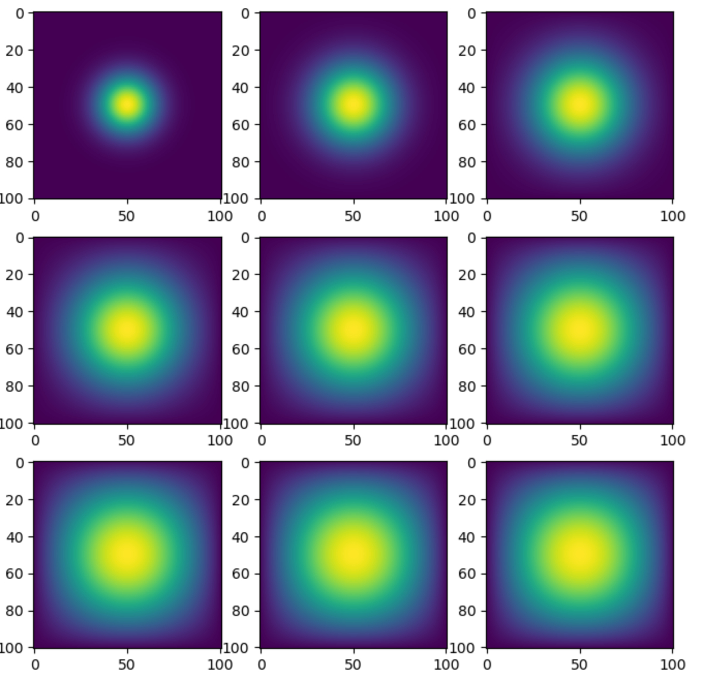
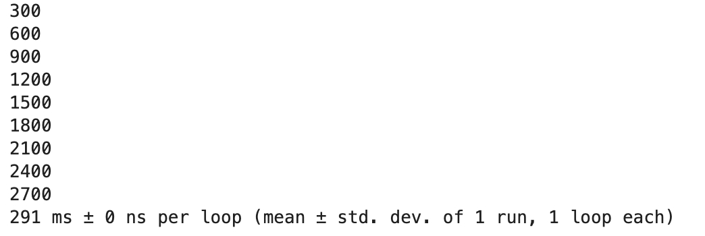

When looking at the four methods that we have implemented, it is clear that the advance_time_matvecmul() method is by far the slowest at 1 minute and 39 seconds per loop while our final method, advance_time_jax() is the fastest at a mere 291 ms per loop. The method advance_time_numpy() and advance_time_jax() may seem relatively similar in speeds as there is less than a second separating their time to progress 2700 time steps, however in reality the jax method is a little less than twice as fast as the numpy method, at times of 291 ms and 520 ms respectively. That being said, they are both significantly faster than the sparse_advance_time_matvecmul() method at 1.7 seconds per loop , which itself is still much faster than the advance_time_matvecmul() which, as stated before, took approximately 1 minute and 39 seconds to advance our model through 2700 timesteps.
When it comes to writing the functions, taking into account that I did not write the first method, I found the get_sparse_A() method the easiest to write, as I was simply building on the get_A() method I had previously written, and then writing one line to set my return value to a sparse matrix corresponding to the matrix returned by the get_A() function. Similarly, the get_A() function was relatively straightforward to write as I simply had to create a matrix and then edit three of the diagonals. I initially had some trouble when writing the advance_time_numpy() function as I was unsure of how to implement the boundary conditions that were to allow heat to escape from the model. Before successfully completing the boundary condition, my results yielded a heat map that began to take on an almost plus-like shape as the heat began to reach the edges and simply wrap around to the other side. I solved this problem by creating a matrix of dimensions (N+2)x(N+2), which allowed the heat to go to an outer ring that was effectively deleted before returning the function, simulating the idea that the heat escaped outside of our model. Similar to the get_A_sparse() function, after writing the advance_time_numpy() function the advance_time_jax() function was relatively easy to implement. Conceptually it follows the same pattern as the numpy function, with the only catch being that jax does not allow for index assignment. To get around this, I found a function .at(), helping me to navigate around the matrices, and more importantly, I created new matrices at each step, meaning I was not altering any pre-existing matrices, but rather creating new ones which is allowed by jax.
Blog Tutorial
Today we will create a simulation of two-dimensional heat diffusion using packages such as jax and numpy. Let us start by creating two jupyter notebooks, one titled heat_equation.ipynb, and the other jax_heat_map.ipynb. We will store our important methods in heat_equation.ipynb, while jax_heat_map.ipynb will be used to test them as we import them in.
Starting in heat_equation.ipynb, let us start by importing the packages we plan on using in this project: jax, numpy, sparse from jax.experimental, jit from jax, and jax.numpy. I chose to import numpy as np and jax numpy as jnp to make them easier to use as we will be using them a fair amount. We are now ready to begin implementing our first method advance_time_matvecmul(). For this function we will take in three arguments, A, u, and epsilon. It is important to familiarize ourselves with what these variables represent in the model as they will be used pervasively throughout the process. The value A represents the transition matrix to be used. The variable u represents an N x N matrix that is the current state of our heat map. We will find soon that initially u, at time zero called u0, is a simple point in the middle of the matrix. In order to update to the next timestep, we will use A, which is a numpy array of size N2 x N2. By finding the product of A and u, we find what kind of change is to be seen when moving to the next timestep. Finally, epsilon tells us the magnitude of that change. Therefore, the change we see between timesteps is given by the epsilon(Au). Finally, to get to the next timestep, we simply add the change to our current state, u, to the change we just found, setting this all equal to a new u to get to our next time step.
Now that we understand the math behind what we are trying to simulate, we can get back to our advance_time_matvecmul() function in heat_equation.ipynb, which is passed in the three parameters u, A, and epsilon. The purpose of this function is to simply advance us one timestep in the simulation, returning the value u representing the new heat map. Luckily, we know how to do that given our discussion in the previous paragraph. By simply using the equation we found, we can set u equal to u + epsilon(Au), however there are some technicalities that we need to deal with. Firstly, we need to use the u.flatten() function when finding the product of A and u as otherwise we will encounter an error due to differences in dimensions between A and u. When flattened, u becomes a one dimensional array of size N2, allowing for the product to be calculated by multiplying by an N2 x N2 matrix, namely A. Unfortunately, to return a reasonable u, we need a matrix that is of the dimensions N x N, similar to the u we were passed in. To get our flattened product of A and u back into the form of an N x N matrix we can use the .reshape(A,B) function which will revert the product back into an A X B matrix. It seems that we could simply replace A and B in this function with N and N as we know those are the dimensions of our desired matrix, however we must be careful here as there was no value N passed into this function. While a global N may have been declared, it is safer to use the shape of u passed in to calculate our dimensions. To find these dimensions, we use the .shape attribute of u, calling u.shape[0] to find the dimension of the first axis, which corresponds to the N that the passed in u is utilizing. You may notice that I used u.shape[0] for both parameters, yielding reshape((u.shape[0],u.shape[0])) instead of using the u.shape[1] for the second parameter. This works only because we know that u is square, and therefore u.shape[0] and u.shape[1] will yield the same value. Therefore, there is no harm using the first index for the second parameter, however I simply chose to use the zeroth index for both. We have now successfully implemented the Au part of our equation into the function, and the next part is quite simple. As epsilon is simply a scalar, we can directly multiply the matrix that we just found by epsilon, yielding the epsilon(Au) part of the equation that we said represented the total change going from one timestep to the next. To get the actual new u for the new timestep, we can add it all to the initial u we received to get our new u. Note that we are only able to add these two values together because they are matrices of the same dimensions. Finally, we can set this whole value equal to our return value, which I also named u, and return this value.
def advance_time_matvecmul(A, u, epsilon):
"""Advances the simulation by one timestep, via matrix-vector multiplication
Args:
A: The 2d finite difference matrix
u: N x N grid state at timestep k
epsilon: stability constant
Returns:
N x N Grid state at timestep k+1
"""
#update our u to the next time step using matrix multiplication
u = u + epsilon * (A @ u.flatten()).reshape((u.shape[0], u.shape[0]))
return u
First function is officially finished! Now looking at the parameters, we can see that epsilon will be easy to find as it is just a scalar value, u will be a bit trickier, but in the beginning it is mostly zeros, making it easier to define. On the other hand, A is a little bit trickier to create. The good news is that A does not change throughout our computations, so we just need to define it once before we start computations. We know that A is a matrix of size N2 x N2, so we can start by defining a value n to be N2 as this will be useful for the coming commands. We then create a list of numpy arrays called diagonal, of different lengths varying from n to n-N, which are all filled with ones with the exception of the first being filled with (-4). These will be used to define the diagonals in our matrix that need to be filled with 1, -1, or -4. We then call the first and third index of our list diagonals, and set ____ to equal zero. Finally, we use these diagonals to create our matrix A, which is mostly zeros with the exception of the diagonals that we had defined earlier. We then return this matrix A, concluding the implementation of this function.
print(inspect.getsource(get_A))
def get_A(N):
'''Defines our transition operator A given value N
Args:
N: Size of our vector u0 to be used.
Returns:
A: The NxN transition matrix that would be used for
a vector of size N
'''
#define n to be N*N to be used as length of A
n = N * N
#Setting the diagonals to be -4 and 1 where necessary
diagonals = [-4 * np.ones(n), np.ones(n-1), np.ones(n-1), np.ones(n-N), np.ones(n-N)]
#setting all other values to zero
diagonals[1][(N-1)::N] = 0
diagonals[2][(N-1)::N] = 0
#combining diagonals to create matrix A
A = np.diag(diagonals[0]) + np.diag(diagonals[1], 1) + np.diag(diagonals[2], -1) + np.diag(diagonals[3], N) + np.diag(diagonals[4], -N)
return A
We are now ready to check if the functions we just wrote are functioning properly! Let us go to the other file we created, jax_heat_map.ipynb, and do some setup with some more imports. For this file I imported all of the files we imported for the heat_equation.ipynb as well as importing time and pyplot from matplotlib as plt. The time package will be used to test how efficient our functions are, while the pyplot package will be used to visualize our data to ensure that we are achieving reasonable results. Next we want to ensure that we can use the function we wrote in our other file, so we can run the command %run heat_equation.ipynb. This will run the file we wrote first, allowing this new file to access all of the functions defined in the previous file heat_equations.ipynb. Next, we can decide on the values of the parameters we will use for our model. I set my epsilon to 0.2 and my N to 101 for a reasonable estimation of diffusion. Next, let us get a matrix A we can use by calling our function get_A() while passing the variable N as an argument. Finally before testing, we will create an empty list called listShow. This list is where we will store some of the information at certain time steps to get a peek into how our function is performing. Now, before we call our function, we must define an initial u0 as our starting point for our heat. A good starting point is putting one unit of heat at the midpoint. To accomplish this, we first define u to be an NxN matrix full of zeros using the command np.zeros((N,N)). To find the middle, we simply use the index u0[int(N/2),int(N/2)] and set it equal to 1.0. If we want to see how it looks, we can run the command plt.imshow(u0) and you should see a dark grid with one small, bright square in the middle. Now that we have defined all of our parameters, we are ready to start. Running the function just once will produce very minimal changes in our grid, so it is advantageous to run the model many times and check in on the results at regularly scheduled intervals. This sounds like the perfect place to implement a for loop. Let us run a variable, call it i, in range from (1, 2701), setting u0 equal to the function call of advance_time_matvecmul(A,u0,epsilon). This will run to timestep 2700, yielding enough time to see significant results. However we mentioned that we wanted to be able to check in on the progress at regularly scheduled intervals, say every 300 timesteps. To implement this, within the for loop we can write an if statement checking if i%300==0, which would imply that i is a multiple of 300. Then, within the if statement we can append both u0 and i in a list to the empty list we created just before writing this loop, listShow. I also like to print out i every time it hits a multiple of 300, to make it easier to keep track of the progress of the loop. We can now run our first iteration of our model, however note that this code block will take a long time to run. For my machine it took about a minute and a half to run. If you desire, you can time how long it takes on yours by inserting the command %%time it -r 1 -n 1 at the top of the block. This will print out how long the block of code took to run when the block is done running. While your code is running, you should be able to see a new multiple of 300 be printed out every once in a while as the variable i iterates past that value in the loop, which is a good way to keep track of the progress through the loop.
%%timeit -r 1-n 1#setting u0 to initial conditionu0 = np.zeros((N,N))u0[int(N/2), int(N/2)] =1.0#using for loop to update our timestep 2700 timesfor i inrange(1, 2701):#calling function to advance forward one timestep u0 = advance_time_matvecmul(A, u0, epsilon)if i%300==0:#appending state every 300 steps and printing timestep for debugging listShow.append([u0,i])print(i)
Output:

Our loop has finally finished running! The only issue is we do not see any results outside of the increments of 300 printed out to the screen and the excruciatingly long time it took to run that block of code, 1 minute and 39 seconds for me. Therefore, our next step is to visualize the steps our model just underwent. We remember that we stored the status of u0 at each increment of 300 in listShow. Doing some quick math we can calculate that we have nine total updates stored in this list, which we will use pyplot to display in a nice fashion. As we have nine instances, it seems reasonable to present them in a 3 x 3 grid, so let us set a variable rows and columns both equal to three. Next we are going to define a variable that will not be used until a bit later, call it img_count and set it equal to zero. We are now ready to define our display figure using pyplot by calling plt.sublots(nrows=rows, ncols=cols, figsize=(15,15)). The parameters we are passing into this function are relatively self explanatory, nrows refers to the number of rows desired, ncols refers to the number of columns desired, and figsize is how large we want the figure to be. We can set this equal to fig, axes as these will be the variables we access when plugging our information into the new grid. Finally, we can run a nested for loop to access each element of our new 3 x 3 grid. While running i in range of rows and within that j in range of columns, we call axes[i,j].imshow(listShow1[img_count][0]). This displays the image created by our stored u value in listShow in the axes indexed at [i,j]. We can see that img_count makes its long awaited appearance here, as it serves as our iterator through the list, meaning it is critical to increment it by one next to ensure that we do not print the same picture in each portion of the grid. You should see an output of a 3 x 3 grid, and in each slot there is a dark square, with a circle of light in the middle, growing bigger each time as we go from top left to bottom right. Conceptually, this makes sense as the light represents the heat diffusing throughout the square area as time passes. If you see a similar result, then we know that our first two functions are working as intended.
#setting dimensions of image displayrows=3cols =3#defining variable to be used in display loopimg_count =0#defining our display figurefig, axes = plt.subplots(nrows=rows, ncols=cols, figsize=(15,15))#looping through each element in our figure, setting each to a different timestep of our model saved in list listShowfor i inrange(rows):for j inrange(cols): if img_count <len(listShow):#setting each box in display equal to unique image from list axes[i, j].imshow(listShow[img_count][0])#incrementing img_count to let us traverse along the list img_count+=1

Now that our first two functions are up and running, we can start working on our next function, get_sparse_A(). The purpose of this function is simply to take in a dimension N and return the sparse version of the A matrix corresponding to the N. Luckily, we have already done half of the work in our previous function get_A(), which we can call directly while passing it the parameter N. This will create the A matrix that we intend to convert into a sparse matrix. The jax package holds an experimental sparse matrix support that we will be using for this purpose. The exact format we will use is called the batch coordinate (BCOO) format, which will allow us to use less space to store this matrix, which will in turn drastically decrease the time required for the matrix multiplication. In order to convert this A matrix into its sparse form, we run the command sparse.BCOO.fromdense(A). We call sparse as it is part of the sparse package, BCOO is the format in which we wish to convert the matrix to, and fromdense signifies that we wish to go from a normal or ‘dense’ matrix, to a sparse matrix. Now we assign that to our return value A_sp_matrix, and return that value, completing the purpose of this function.
print(inspect.getsource(get_sparse_A))
def get_sparse_A(N):
'''Returns a sparse form of our transition matrix A
Args:
N: Size of our vector u0 to be used
Returns:
A_sp_matrix: The sparse form of the NxN transition matrix
that would be used for a vector of size N
'''
#get the matrix A corressponding to the passed value N
A = get_A(N)
#find sparse version of matrix A and set it to our return value
A_sp_matrix = sparse.BCOO.fromdense(A)
return A_sp_matrix
We now want to double check that this function is running properly, so we will traverse back to jax_heat_map.ipynb to run a similar chunk of code that we ran previously, with a few key differences. First, instead of passing A to our advance_time_matvecmul() function, we want to ensure it is able to handle a sparse matrix in the hopes that it will decrease the time needed for computations. In order to get such a sparse matrix, we call our new function get_sparse_A(), while passing N as an argument. I set this equal to a variable named sp_A so that I knew this was the sparse version of my A matrix. Then, I initialized a new list called listShow1, setting it equal to an empty list. Next, we want to do the same process we did to check our first two functions, except this time we will pass in sp_A to advance_time_matvecmul() as well as applying the jit function to it. The jit function will use the jax just in time compilation feature which will drastically improve the performance of the function. When running this code block, we can see how much this improves the speed, taking the block 1.7 seconds to finish as opposed to over a minute for the previous attempt. Again using a similar process to above, we will display our data in the exact same way, except we will be getting our display information from listShow1 instead of listShow. Our output should be similar to the output we got previously.
%%timeit -r 1-n 1#resetting u0 to initial conditionu0 = np.zeros((N,N))u0[int(N/2), int(N/2)] =1.0#looping to increase timestep a total of 2700 timesfor t inrange(1, 2701):#calling jitted version of function to advance timestep#note that the matrix passed in is a sparse matrix u0 = jit(advance_time_matvecmul)(sp_A, u0, epsilon)if t%300==0:#appending timestep information once every 300 steps, printing for debugging purposesprint(t) listShow1.append([u0,t])
Output:

#defining dimensions of our display figurerows=3cols =3#resetting variable to be used in display loopimg_count =0#defining our display figurefig, axes = plt.subplots(nrows=rows, ncols=cols, figsize=(15,15))#looping through each element in our figure, setting each to a different timestep of our model, saved in list listShow1for i inrange(rows):for j inrange(cols): if img_count <len(listShow1):#sets each box in display to different image in listShow1 axes[i, j].imshow(listShow1[img_count][0])#increment img_count to traverse along the list img_count+=1

We are now prepared to implement another method, providing us with an alternate way to run our model without using matrix multiplication. Instead, we will use vectorized array operations to progress our model, made possible by the numpy passage. We have the equation that the update discrete update time is:

Therefore we need to find a way to update each point so as to abide by this equation. For me it helped to visualize it in two separate updates, a vertical and horizontal one. Looking at the horizontal changes, we see that for each value in the matrix at time t+1, is created in part by adding the elements directly to the left and right from the matrix at time t. As you may be considering already, we run into an issue with the values at the borders in which there is no value to either the right or the left. To deal with this, we will create an array of zeros of size (N+2)x(N+2), and place our current grid state at time u into the middle of the matrix. This will give us a bit of leeway in our computations as these outer values will not affect the inner values as they are zeroes and it does not matter computationally what happens to them does not matter as we will get rid of them before returning our updated grid state u_new. Starting from the beginning, we have to get what value to use for N as we are only passed in u and epsilon. To do this we will again extract N using the shape of the grid state u passed into the function, accomplished by setting m,N to u.shape. Now that we have acquired our value for N, we can define our (N+2)x(N+2) matrix full of zeros by again using the function np.zeros((N+2,N+2)). To set the middle to be equal to u, we use indexing and set the middle region, indexed by [1:-1,1:-1], equal to the grid state u. Now that we have our matrix u with a surrounding padding of zeros, we can begin our calculations. We first will find our changes in the x-direction using the update equation stated earlier and numpy’s .roll() method. The .roll() method rolls each element along a given axis, with values rolling past the last position being sent back to the first position. We can use this to define the change between each iteration. It helped me to split it into two changes, one along the x-axis and the other along the y-axis. Looking at the x-axis, for each updated element we need to add the element directly to the left and right of it, which we can accomplish by using an np.roll() both left and right. We do this by setting the axis equal to zero, as that corresponds to the x-axis, and first setting the shift to one, as that moves us one element to the right. Next, we call np.roll() again and set the shift to -1, representing a shift to the left. Now we can do the same thing for the y-axis, the only difference being we are setting the axis in our roll functions equal to 1 as that corresponds to the y-axis. Now we have taken care of almost all of the changes found in our discrete time equation, but we are missing the 4u term. To account for this, I simply subtracted 2u from each equation to combine for a total of (-4u), however you could do this at a later stage if desired. Now that we have determined what the change is to be between timepoints, we multiply by epsilon and add the u passed into the function as we did in our previous advance_time_matvecmul() function, setting it equal to a matrix named finU. We may be tempted to stop here, however we are missing a key factor: the matrix we have created remains a (N+2)x(N+2) matrix, when we want to return a matrix of size N x N. Luckily, we have set it up so that the outer ring of values are to be thrown away, as we initially introduced them within the function. To accomplish this, we set our return matrix, u_new, equal to the center portion of finU using the indices[1:-1,1:-1] before returning this new matrix.
print(inspect.getsource(advance_time_numpy))
def advance_time_numpy(u, epsilon):
"""Advances simulation by one timestep using functions from numpy
Args:
u: NxN grid state at timestep k
epsilon: stability constant
Returns: N x N Grid state at timestep k+1
"""
#get N so we know the size of matrix we are working with
m,N = u.shape
#create new matrix of size with two extra rows and columns
newU = np.zeros((N+2,N+2,),dtype='float64')
#set the center of new matrix equal to u, meaning ring of zeros around passed matrix u
newU[1:-1,1:-1] = u
#implement changes in x direction
u_xx = np.roll(newU, shift=1, axis=0) - 2 * newU + np.roll(newU, shift=-1, axis=0)
#implement changes in y direction
u_yy = np.roll(newU, shift=1, axis=1) - 2 * newU + np.roll(newU, shift=-1, axis=1)
#apply changes and set it equal to a new matrix
finU = newU + epsilon * (u_xx + u_yy)
#eliminate outer ring of values, allowing the heat to escape, setting equal to return value
u_new = finU[1:-1,1:-1]
return u_new
To check that this function is running correctly, we can repeat the same debugging process we have done twice now in jax_heat_map.ipynb: create a new empty list, and run our loops. However this time, we will call the new function advance_time_numpy() and only pass the parameters u and epsilon as this function only takes these two parameters. You should notice another increase in speed as mine took 520 ms to run the code. Again, the output should appear very similar if not identical to the outputs from our previous attempts using the other functions. Note, the function advance_time_numpy() is not to be jitted as advance_time_matvecmul() was.
%%timeit -r 1-n 1#resetting u0 to initial conditionsu0 = np.zeros((N,N))u0[int(N/2), int(N/2)] =1.0#looping to increase timestep a total of 2700 times for t inrange(1, 2701):#calling numpy function to advance timestep u0 = advance_time_numpy(u0, epsilon)if t%300==0:#appending timestate information once every 300 steps, printing for debugging purposes newList.append([u0,t])print(t)
Output:

#setting the dimensions for our display figurerows=3cols =3#resetting variable used in display loopimg_count =0#defining our display figurefig, axes = plt.subplots(nrows=rows, ncols=cols, figsize=(8,8))#looping to fill our display figurefor i inrange(rows):for j inrange(cols): if img_count <len(newList):#setting each box in display equal to unique image from list newList axes[i, j].imshow(newList[img_count][0])#incrementing img_count to traverse to next list element img_count+=1

Finally, we have come to our last function, advance_time_jax(). In this function, we wish to implement a similar method to advance_time_numpy(), however as we plan to jit this function, we have to be careful in how we do so. Much of the setup is the same as the numpy function as we will use u.shape() to get our value for N and will then create a new matrix of size (N+2)x(N+2) full of zeros called newU. We again wish to fill the middle of this matrix with the matrix that we were passed in, however we cannot change individual indices due to restrictions for jax, therefore we will be creating lots of new matrices. Therefore, instead of directly reassigning values for the central section of our matrix newU, we will use the .add function to add u to just our central section by calling the function .at[1:-1,1:-1], effectively placing u in the middle as we are simply adding u to a bunch of zeros. After assigning this altered matrix back to newU, we can do the same process as we did in numpy to define our changes in the x and y directions, however instead of calling np.roll(), we will be calling jnp.roll() to call the jax version of numpy. We can then apply the changes, assigning it to a new matrix finU, in the same way as we did in numpy as finU = newU + epsilon*(u_xx+u_yy). Now, we can select just the center values, setting it equal to the new matrix we will be returning, u_new, and we are finished with our final method.
print(inspect.getsource(advance_time_jax))
def advance_time_jax(u, epsilon):
"""Advances simulation by one timestep using jax without using
matrix multiplication routines.
Args:
u: N x N grid state at timestep k
epsilon: stability constant
Returns: N x N Grid state at timestep k+1
"""
#get N so that we know what size of matrix we are working with
m,N = u.shape
#create new matrix with two extra rows and columns
newU = jnp.zeros((N+2,N+2))
#set the center of the new matrix equal to the passed matrix u
newU = newU.at[1:-1,1:-1].add(u)
#define the changes to be implemented in the x direction
u_xx = jnp.roll(newU, shift=1, axis=0) - 2 * newU + jnp.roll(newU, shift=-1, axis=0)
#define the changes to be implemented in the y direction
u_yy = jnp.roll(newU, shift=1, axis=1) - 2 * newU + jnp.roll(newU, shift=-1, axis=1)
#implement the changes into a new matrix
finU = newU + epsilon * (u_xx + u_yy)
#setting the return value to the matrix with only desired values
u_new = finU[1:-1,1:-1]
return u_new
To check that we have created another functioning method, we repeat the same debugging process as we did for advance_time_numpy(), except we create a different list and call the advance_time_jax() function while making sure to jit the function as we call it. This function should be very fast, even faster than our previous function, as mine took 291 ms to run the code. If the output appears identical to our previous iterations then we have completed all of our methods successfully.
%%timeit -r 1-n 1#resetting u0 to initial conditionsu0 = np.zeros((N,N))u0[int(N/2), int(N/2)] =1.0#looping to increase timestep a total of 2700 timesfor t inrange(1, 2701):#using jax function to advance timestep by one u0 = jit(advance_time_jax)(u0, epsilon)if t%300==0:#once every 300 steps append timestep information to list, printing step for debugging purposes newList1.append([u0,t])print(t)
Output:

#defining dimensions of displayrows=3cols =3#resetting variable used in display loopimg_count =0#defining our figurefig, axes = plt.subplots(nrows=rows, ncols=cols, figsize=(8,8))for i inrange(rows):for j inrange(cols): if img_count <len(newList1):#filling each box with image from information in newList1 axes[i, j].imshow(newList1[img_count][0])#incrementing to allow for traversal along list img_count+=1